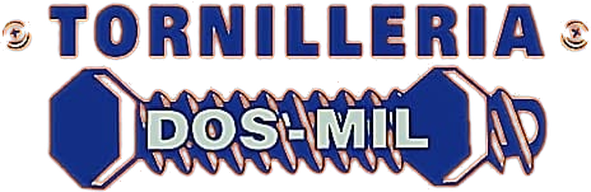
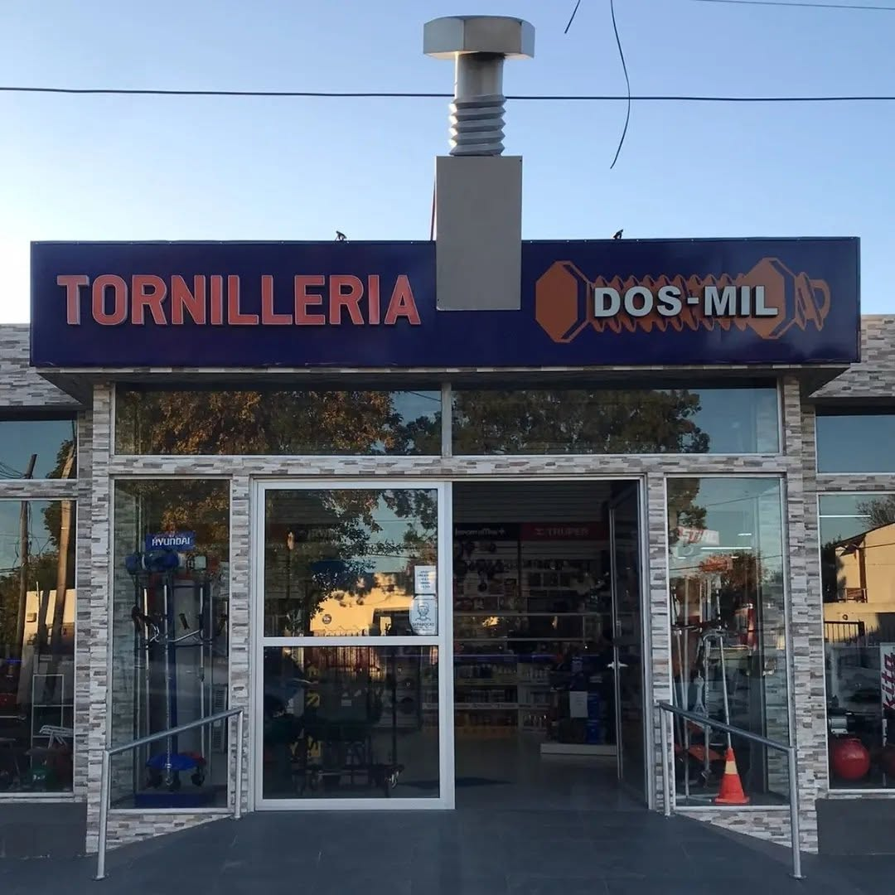

Todo para fijar,
armar y construir.
Somos su tienda ferretera en Rocha: tornillería, fijaciones, herramientas y materiales de barraca, con atención en el mostrador.


Nosotros
Tornillería Dos-Mil es una ferretera de barrio en pleno Rocha. Trabajamos para que lleves exactamente la pieza que necesitás, ya sea un tornillo suelto para un arreglo o materiales para una obra completa.
- Atención directa. Te asesoramos en el mostrador para elegir medida, material y fijación.
- Variedad. Tornillería, herramientas y artículos de barraca en un mismo lugar.
- Compra por unidad o por cantidad. Para el hogar, el taller y la obra.
Dentro del local
¿Cómo podemos ayudarte?
Explorá nuestros productos en línea o ponete en contacto con nosotros para recibir asesoramiento personalizado.